SAGANO BLOG
- >
- SAGANO BLOG
- >
- SSH
2025年03月04日
こちらの記事の続きです。
韓国の全南科学高等学校の生徒と交流したクラスの国際交流委員が、その様子をまとめてくれました。

『お互いの研究を発表し、意見を深め合いました。ワックスワームという蜂の巣を消化できる虫がプラスチックをも消化できるという研究結果がとても興味深かったです。プラスチックは微生物の力では分解できないので、もしワックスワームがプラスチックを消化でき、それによるワックスワームへの害がないのであれば、プラスチックの環境問題の解決につながるのではないかと思いました。』
『科学について英語で交流するのはかなり難しかったですが、それでも事前にある程度知識を入れておけば何とかやり取りできると感じました。だから、科学の分野を英語で交流する際でも難しいから無理と決めつけず、積極的に学んでいこうと思いました。』


『私たちのグループは福笑いをしました。初めてやったのにも関わらず、みんなとても上手でびっくりしました。みんな積極的にゲームに参加してくれて嬉しかったし、もっと私たちからも積極的に相手のことを知ろうとすることが大切だと思いました。』
『嵯峨野高校について質問をしてくれたり、韓国の学校のことを教えてくれたりと積極的に話してもらえたので、私たちも話しやすく、話の流れの中で質問ができたと思います。互いに話しやすい雰囲気を自分から作れるようにしたいです。』

『一緒にランチを食べました。話している中で驚いたのが、トリリンガルの生徒がいたことです。韓国語はもちろん、英語、日本語までペラペラで、私もいつかこんなふうに複数の言語で色々な人と話せたらいいなと思いました。また、天文クラブに入っている人もいて、望遠鏡を使って撮った星の写真を見せてくれました。とても幻想的で綺麗でした。勉強や自分の好きなことを続ければ、コミュニケーションの幅が広がることを学びました。』
『ご飯を食べて、お互いに好きな歌手や曲を質問しあったり好きなものについて話しました。印象に残ってるのは米津玄師が好きだと言っていたことです。日本の歌手を知っていると知り、親近感が湧きました。今回の交流で楽しく会話をしながら韓国の方の趣味や好きな曲、学校で何をするのかなどを話せてとても楽しい機会となりました。』
『喋りながらお昼ご飯を食べました。その中で最も驚いたことは、全南科学高校にはカラオケがあるということです。日本と韓国の高校の違いについてわかって面白かったです。』
2025年02月25日
2月13日（木）、韓国の全南科学高等学校から生徒14名と教員11名が来校し、本校生徒と交流しました。全南科学高は、韓国において科学に特化した教育を行う高校で、卒業生の多数が韓国科学技術院（KAIST）等の名門大学に進学するトップ高の１つです。
１限は、２年専修コースの生徒と探究成果の発表を通じた交流を行いました。嵯峨野高、全南高からそれぞれ２件ずつ、英語によるプレゼンテーションと活発な質疑応答が交わされました。


２限は、１年８組の生徒とともに、プラネタリウムを用いた授業を体験しました。
３限は、２年専修コースのスーパーサイエンスラボⅡ（SSLⅡ）を自由に見学し、研究に関する質疑応答や議論による交流を行いました。

４限は１年１組のグローバルインタラクション（GI）の授業において、日本の伝統的な遊びを体験するなど、ともに楽しみました。


昼休みには、本校校長による Welcome Ceremony 後、２年生の国際交流委員とランチを食べながら歓談しました。
午前中だけの短い時間でしたが、大変楽しんでもらい、教員の方にも「感動した！（"Impressive !"）」とのコメントをいただくことができました。今後も交流が続くことを楽しみにしております。


2025年02月10日


1月31日に、令和6年度嵯峨野高校探究成果発表会を開催し、本校2年生全生徒とサイエンス部の1年生がポスターセッション形式で、発表を行いました。1年生も参加し、先輩の発表を見学しました。
コロナ禍以降途絶えていた発表生徒保護者の参観も復活し、厳しい寒さにも関わらず、多くの来賓や学校関係者、保護者の方々にご来場いただきました。
発表生徒たちは、1年間かけて取り組んできた探究の成果を6分という短い時間で伝えるために、様々に工夫を凝らし、熱心に発表していました。質疑応答では、投げかけられる様々な質問に対して、よくぞ聞いてくれましたとばかりに説明を加える姿が印象的でした。次の発表に移るための移動時間も惜しんで、発表者と視聴者とが活発にやりとりをしている姿も見られました。
質疑応答の場面で印象的だったのが、1年生たちの聴く側としての積極的な姿勢です。多くの1年生が積極的に手を挙げ、時間内に全員が質問できないような状況も見受けられました。聴く側の姿勢は、ポスターセッションの成功に欠かせない要素です。来年度、彼らの発表が楽しみです。
探究活動において、発表は一つの節目ではありますが、これで探究が完結するわけではありません。この日得た気づきや学びをきっかけに、さらに探究活動を広げ、深めていきましょう。
2025年01月16日
１月12日（日）、「卒業生キャリア講話」を実施しました。
社会で活躍されている本校の卒業生に来ていただいて、自身のキャリアについてお話しいただく内容で、今年度初めての取組です。
今回は、昨年度設立した卒業生人材バンク「嵯峨野高校サポートチーム」に登録してくださった２名の卒業生にお話しいただきました。
生徒だけでなく、保護者の方々も参加され、子どもとの関わり方についての質問などもありました。
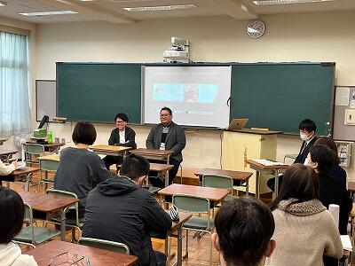
おふたりとも学生の頃から文系・理系の枠を越えて様々なことに興味・関心をもっておられ、その時の自分自身の意志を大事にしながらキャリアを歩んでこられたとのことでした。
「今、社会で求められる資質・能力とは」という問いかけには、論理的思考力、実直さ、他者から信頼されること、多様な人とコミュニケーションできること、改善のためのリフレクションをすることなどを挙げて答えてくださいました。本校の目指す「『ほんまもん』の学び」でも大事にしたい要素でした。
今年度、この取組に限らず、「嵯峨野高校サポートチーム」の多くの卒業生にお世話になっています。
また「卒業生アンケート」にも多くの卒業生から回答をいただいているところです。
母校のために協力したいという思いで協力してくださる卒業生の皆さんに、日々感謝しております。ありがとうございます。
2024年11月25日
11月16日（土）～17日（日）、サイエンス部の生徒が奈良学園奈良中学校・高等学校主催の「環境活動フォーラム」に参加しました。
１日目は、オンラインで各校の環境活動発表に参加しました。本校は、「京都発！真の森林環境保全 〜校有林調査ラボの活動〜」と題し、11年に渡る校有林での課題研究活動について報告しました。


２日目は、奈良学園奈良中学校・高等学校での活動に参加しました。

活動は、主に奈良学園奈良中学校・高等学校の所有する学校林「森の学校」で行われました。内容は、環境保全実習①「里山の萌芽更新と実生調査 」、環境保全実習②「里山保全実習」です。
本校生徒は、本校校有林とは違う多様性の高い里山に目を輝かせながら、熱心に活動していました。土壌を中心とした調査機材を持ってこなかったことを悔やむ声も・・・。
ジャパンフィールドリサーチで経験を積んだ本校生徒からは積極的に活動をする様子が伺えました。
最後には、環境保全実習をふまえ、環境活動について参加生徒間で討議をしました。各校の生徒は、それぞれの研究課題を中心に意見交流し、気づきの多い時間を過ごすことができました。
今後、本取組の経験を活かして、生徒たちそれぞれが研究課題の深化を図ってくれることを期待しています。
2024年11月15日
１１月８日(金)､第１学年専修コースを対象に、京都大学大学院農学研究科助教の大土井 克明先生と、本校卒業生である櫟原さんにご講演をいただきました。
講演ではまず大土井先生から、自然界における資源循環の仕組みをはじめ、現在の人間社会における食糧生産の課題と、その解決策としてのメタン発酵についてお話いただきました。
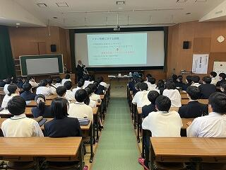 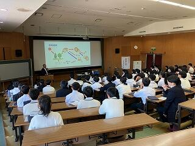
続いて、現在博士後期課程で地域環境科学を専攻されている櫟原から、ご自身の研究と大学生活についてのお話をしていただきました。生徒たちは普段聞けない研究の話はもちろん、大学生活についても興味を持って聞いている様子でした。
お話の後、生徒が持ってきた物を使ってメタン発酵の実験をしました。
 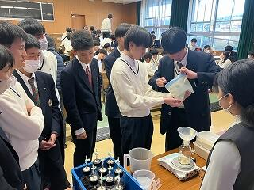
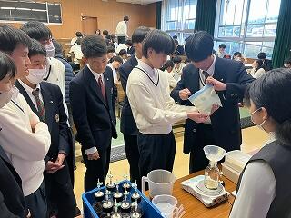
この実験は櫟原さんが実際に行っておられる実験で、研究室から道具や材料を持ってきてくださいました。生徒は砂糖や片栗粉などの発酵できそうなものから、消しゴムやチョークのような発酵できなさそうなものまで、様々なものを持ってきおり、現在は、探究委員が中心となって、どれが最もメタンを発生するのかを調べているところです。
今回のサイエンスレクチャーでは、メタン発酵を利用した資源循環についての知見が深まったことに加え、最前線で活躍しておられる研究者の考えを聴けたことは、生徒にとって今後の進路選択の参考になったと思います。また、卒業生のお話を聴けたことで、大学に進んだ後の姿を少し想像できるようになったのではと思います。
2024年11月11日
11月９日（土）、「令和６年度 みやびサイエンスガーデン」を京都工芸繊維大学で開催しました。このイベントは、京都府教育委員会と、SSH指定校である洛北高校・嵯峨野高校・桃山高校が主催となり、生徒たちが日々の探究の成果をポスターセッションの形式で発表しました。本校からは35件のポスター発表を行い、他校の生徒や先生方、来賓の方々と活発な議論交流を行いました。
本校２年生は、これまでスーパーサイエンスラボⅡで取り組んできた探究の経過を報告しました。
またサイエンス部が日々の研究の成果を報告しました。
.jpg)
.jpg)
準備の段階では初めてのポスター発表を不安に感じている生徒もいましたが、当日には、特に質問されたところを丁寧に説明するなど、それぞれ工夫しながら発表を終えることができました。今後は頂いた質問やコメントをもとにさらに実験を重ね、自身の研究についてより深く、探究していってくれることを期待しています。
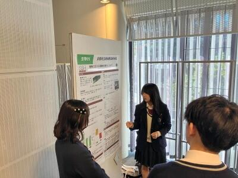 .jpg)
当日は発表生徒だけでなく１年生も見学に参加し、来年は自分たちがこの場で発表するというイメージを持つことができました。嵯峨野の探究の伝統はこうして次世代へとつながっていきます！
2024年11月06日
10月28日(月)2年7・8組の生徒がSE（サイエンスイングリッシュ）の授業内で、考古学者のDr. Noxonを招きVR技術についての特別講義を受けました。該当クラスの国際交流委員がその様子をまとめてくれました。
『3D画像の作り方を学びました。色々な角度から何枚もの再現したい物体の写真をとってそれを元に3Dの画像が作られるのですが、大量の平面の写真がアプリで立体になるのが不思議で感動しました。考古学の世界で遺跡の再現や研究にこの技術が利用されていると知って自身のラボ活動でも利用できるかもしれないなと感じました。』


『3Dスキャンを実際に使用してみて、想像より早く簡単に3Dスキャンができることに驚いた。また、海外出身の先生が縄文時代について興味を持たれて、研究されていることも知ることができた。』
2024年10月30日
10月21日、京都大学大学院農学研究科の丸岡毅さんに御来校いただき、本校の専修コース２年生に表題のタイトルで御講義いただきました。丸岡さんは、本校の2014年度卒業生で、現在は博士後期課程で化学生態学を専攻しています。

丸岡さんは、「蛾のフンからお茶をつくる」というユニークな研究が注目されており、その成果の1つとして商品化された「虫秘茶」は、一流の料理人にも高く評価されています。メディアからも注目され、NHKの人気番組にも出演されました。

今回は、さまざまな葉を餌とした蛾の糞のサンプルの意外な良い香りに驚かされたあと、蛾が葉を消化する過程で起こることや、虫の種類によって生じる違いなど詳細な分析結果について御講義いただきました。また、分析に用いた機器とその測定原理についても詳細に説明いただき、現在の学びが将来の研究につながっていることを実感できました。


御講義後は、研究内容の他、なぜ博士課程に進まれたのか等、様々な質疑応答が行われ、これからの進路を考えるにあたって大変有意義な時間となりました。


2024年09月25日
９月14日（土）～16日（月）、ジャパンフィールドリサーチ(JFR) in 熊本 を実施しました。
熊本県玉名郡和水町の「ゆるっと！ひふみ亭」を拠点とした森林環境調査活動に、校有林調査ラボとサイエンス部の生徒９名が参加しました。また、昨年度に引き続き、熊本県立鹿本高等学校・熊本県立第二高等学校の生徒・教職員の皆さんと共同での調査も行いました。
14日（土）は開会式のあと、前和水町教育長 岡本貞三 先生から、和水町の自然と歴史についての講話をいただきました。その後、ひふみ亭近隣の山林を歩き、翌日の調査地点の確認を行いました。

15日（日）は３校の生徒が研究テーマ毎にチームに分かれて調査活動に取り組みました。竹林・混交林・スギ林を対象地とし、東海大学農学部教授 井上弦 先生に指導助言を受けながら、調査を進めました。調査内容は、ドローンによる地形調査、土壌断面調査、土壌物理性調査、森の癒し～森林の吸音特性～、焼成用土試料採取です。
また、16日（月）は本校の生徒が補足調査を行い、３日間の活動の総括を行いました。
本校の参加生徒は、本取組の調査結果および分析結果をとりまとめ、11月に実施される「みやびサイエンスガーデン」や学術団体における発表を予定しています。
第二高校の皆さんは、壁画に取り組まれ、素晴らしい作品ができあがっていました。
調査の合間には、学校を越えて交流を深めていました。即興のピアノコンサートも。

「ひふみ亭」の皆さんには、今年も調査活動の安心安全確保の面からご協力をいただくとともに、おいしいお昼ご飯を用意していただきました。本当にありがとうございました。
2024年09月18日
9月11日(水)､2学年専修コースを対象に、「フラクタル幾何学入門～コンピュータを使った不思議な数学の世界」という題目で、京都工芸繊維大学教授の平田 博章先生にご講演をいただきました。
講演では、フラクタル図形とは何かやその応用例についてもお話しいただきました。映画やゲームなどのCGを作るために応用されてもいることを知り、生徒も興味が尽きない様子でした。さらに、講演終了後もフラクタル図形をテーマにラボ活動を行っている生徒が積極的に質問する姿も見られました。
実例をもとに、何かを学ぶことで物事の見方が変わり、それが新しい発見につながることや、ずっと気を張り詰めて勉強するだけではなく、学んだことを活かして遊んでみることも大事、というような言葉もいただき、生徒にとって良い刺激となりました。
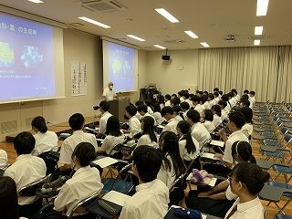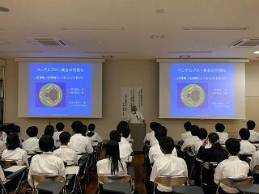
生徒の感想を一部掲載します。
・数学に関する講演となると自分が理解できるか不安だったけれど、フラクタルは順を追っていけば理解しやすく、興味がもてた。また、実生活につながる部分も多くて数学だけれど数学に感じない面白い内容だった。自分も幾何学的な研究をしているので参考にしたいです。
・自分たちがよく見る自然的なものの画像や映像が全く関係なさそうなフラクタルと密接に関係していると知ってとても驚きました。今回のフラクタル以外にも言えることだと思いますが、関係ないと思っていたことが意外な形で関係することがあると思うので、様々なことを学ぼうと思うのと同時に、学んだことを多角的な観点から観察して利用できないか考えようと思いました。
・フラクタルについてすごく曖昧なイメージしか持てていなかったので、少しはっきりしたように思います。数式からあれほど綺麗な形が出てくるのは面白いと思いました。数学の美しさについてもっと知りたいと思いました。
・今回のフラクタル幾何学の内容は今回講演を知るまで全く知らなかったんですけど、今回の公演を通して、フラクタル幾何学について、話もすごいわかりやすかったし、すごい興味を持って聞くことができました。この世の中に潜んでいる複雑な図形をフラクタル図形によって表現できるところは特に強い印象を受けました。また、フラクタル図形は、ただの線分や図形がより美しい見た目に変わったり、その上、目で認識できるのに長さがどんどん無限大に発散して行ったりしているところも興味深い話でした。自分はこの先の進路で数学系を考えていたんですけど、今回のお話は、僕に数学により興味を持たせてくれました。講義ありがとうございました。
・学習はするだけではダメで，その知識をどう活かし，使うかが大切だと聞き，今後，学習するときに意識していきたいと思いました。自然界にあるものが数式から簡単なことを繰り返すだけで本物っぽく作ることができると知ってとても面白いと感じました。
2024年09月15日
９月11日（月）、１年生全員を対象にQO株式会社様より特別講義「プロから学ぶデータサイエンス講座」を実施していただきました。
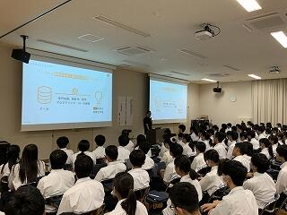
データサイエンスがどのように社会で利用されているのか、マーケティングという面から説明していただきました。
データ分析のキモは「仮説」であり、問い・仮説を立ててから分析し、解釈するというステップについて教えていただきました。
これは生徒たちがこれから取り組む「探究」においても必要なステップです。
後半は実際のデータから戦略を考える演習に取り組みました。

グループワークは大いに盛り上がりました。
アンケート結果から〇〇の回答が多いから〇〇ではないか。
いや、〇〇の回答の方に目を向けると〇〇の方がよいのではないか。
と、数字の背景に何が隠れているのか深く考え、議論する様子が見られました。
代表で発表した生徒の意見は講師の方の想定を超えたもので、驚かれていました。
生徒たちは「数学が社会で役に立っていることがわかった。」、「今後の探究活動に生かしていきたい。」などと感想を述べていました。
QO株式会社の皆さん、ありがとうございました。
2024年09月15日
８月６日・７日に実施したサマーセミナー「東京・つくばサイエンスツアー」について報告します。
これは今年度初めての企画で、２年生10名を対象に実施しました。
まず、国立科学博物館へ行きました。

生徒たちは、動物の剥製コーナーの迫力に圧倒されたり、α 線や β 線の飛跡を白く浮かばせて可視化する霧箱の仕組みや美しさに感動したり、と見学時間が足りないほど、さまざまな展示を楽しみました。
続いて、東京大学先端科学技術研究センターを訪問し、極小デバイス理工学分野の岩本 敏 教授から特別講義をしていただきました。
講義のあとは実験室の見学をさせていただき、研究の様子を知ることができました。

「科学の未来は予測できない」という岩本教授の言葉が印象に残ったようです。
１日目の夜は、宿泊先のホテルで本校の卒業生から現在の研究・業務内容やこれまでのキャリアについて話していただきました。

１名は電気自動車のワイヤレス充電に関する研究について、もう１名は地震に関する調査活動について話してくれました。
両名とも興味関心のあることを現在の仕事にしており、生徒たちが今後のキャリアを考える上で参考になったと思います。
２日目は、つくば市に移動して、施設見学をしました。
地質標本館では、さまざまな鉱石が展示されています。


美しい形をした鉱石を見ていると、なぜこのような形になるのか、という疑問が自然と頭に浮かびます。
生徒たちは帰宅してからも、この２日間の色々な疑問を解決するため、インターネットで調べるなどしたようです。
サイエンススクエアつくばでは、最新の研究成果に触れることができました。

生徒たちに特に人気だったのは、人を癒すロボット「パロ」です。
最後に国土地理院の地図と測量の科学館を見学しました。


３Dメガネで地形を立体的に見ることができたり、伊能忠敬が作成した地図にはじまり現在の測量方法に関する解説まで歴史的な技術の進歩を感じることができたり、面白い展示がたくさんありました。
今回のサイエンスツアーを通して、生徒たちはあらためてサイエンスの面白さや主体的に学ぶ姿勢の大切さなどを感じたようです。
参加した生徒たちがこれを１つの契機として、大きく「飛翔」してくれることを楽しみにしています。
お話しいただいた大学の先生方、卒業生のお２人、見学施設でガイドをしてくださった方々、ありがとうございました。
2024年08月22日
ジャパンフィールドリサーチ in 丹後 の最終日は，昨日の雨での調査中断を取り返すように，残された時間を有効に活用しました。

３日間には、生徒たちは教員のアドバイスがほとんどなくても，キビキビと動けるようになり，「自分たちが何をしなければならないか」を理解し，互いに確認しながら調査を進めることができるようになりました。
そして何よりもフィールド調査の難しさや大変さとともに，楽しさを大いに実感してくれたのが３日間の最大の成果だと考えます。
この経験と得られた学びが，生徒たちの今後に活きることを願います。
2024年08月21日
２日目も引き続き、吸音効果班、土色調査班、土壌硬度測定班に分かれて、調査を進めました。各班員が交代しながら調査を進めていきます。
途中、雨で調査を中断する場面もありましたが、その間も丹後海と星の見える丘公園の施設内でデータを整理したり、休息を取って次の調査に備えました。
雨が止んで再び調査へ。休息の間に研究テーマを思いついたのか、マツ（Pinus densiflora）の枝先にできているまだ若くて青い松ぼっくりを採集に行く班や、夜間の動物の行動調査を行うために赤外線カメラを設置する班なども出てきました。
現地に行ってみて思いつく研究テーマがあるのも、フィールド調査の醍醐味です。


また、夜には今回の調査でTAとして参加している卒業生２名から、高校時代に取り組んだ研究内容やカナダ・ケベックでの調査研究について、紹介をしてもらいました。
先輩が取り組んできた研究の話に興味津々の生徒たち。今まさに研究に取り組んでいるからこその視点で、実験条件や準備について、質問が飛び交いました。
最終日に向けて、大きく前進した２日目でした。
2024年08月21日
7月13日〜15日にかけて、ジャパンフィールドリサーチ（JFR） in 丹後を、京都府立丹後海と星の見える丘公園で実施しました。校有林調査ラボとサイエンス部の生徒19名が参加しました。
朝、亀岡駅をバスで出発し、午後から実地調査に入りました。
初日の調査は、4つの班に分かれて行いました。
植物による吸音効果を調べる班では、草原やクマザサ（Sasa veitchii）が多く生えている地点など、植物の種類による吸音効果の差について、パソコンで記録を取りながら実験を行いました。

土色調査を行う班は、調査地の選定を行い、卒業生サポートチームのメンバーで現在大学院でも研究されているTA（ティーチングアシスタント）に教わりながら調査断面を作成しました。
粘土からレンガを作る班も、調査地を見つけて土を掘りだしていきます。
またサイエンス部を中心とした班では、昨年度のサイエンス部も調査していた宿泊棟横の地点を調査地として、地点ごとの土壌の硬度を測定しました。

天候に恵まれた今日の１日をいかに使うか、各班で工夫を凝らしました。
2024年08月20日
８月６～７日に神戸国際展示場で開催された令和６年度SSH生徒研究発表会にアカデミックラボ・理科ラボのメンバー４人が参加しました。
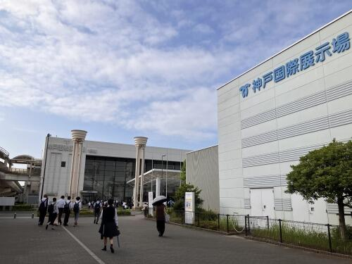北海道から沖縄まで全国のSSH校が神戸に集まり、２３１本の研究発表がありました。
本校は「化粧品に利用可能な植物由来機能性成分を探し求めて」というタイトルで発表しました。
答えやすい質問から専門性が高い質問まで飛び交い、新しい見方や考え方を得ることができました。
わかりやすく他者へ説明する力、深く論理的に思考し議論する力の大切さを学びました。
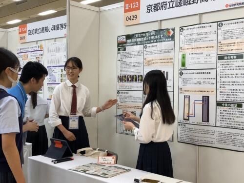

今回の本校の出場チームのようにグループ研究を行っている学校が多い一方で、同じ高校生でも個人研究を行い発表をしている生徒の姿を見て、その熱意や内容理解の深さにとても関心しました。
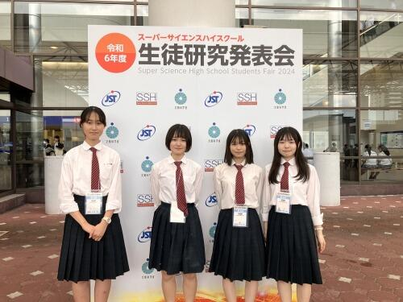

この経験をさらに自分たちの研究に生かし、また後輩たちへ伝えて嵯峨野高校の探究をより盛り上げていきたいと思います。
自らの研究を発表できたことは勿論、他校のレベルの高い研究を見て、様々な意見をもらうことで成長できた２日間でした。
2024年08月19日
７月30日（火）に、本校生徒35名が京都大学の化学研究所を見学しました。化学研究所は宇治キャンパスにある京都大学の附属研究所で、大学の学部・学科の境界を越えて、化学を軸とした様々な領域の研究室が最先端の研究に取り組んでいます。今回は３つの研究室に訪問させていただき、最前線の研究を肌で実感することができました。
まず、化学研究所の歴史ある施設「碧水舎」での全体ガイダンスの後、生徒は３つのグループに分かれ、各研究室で見学をしたり、御講義を聴講したりしました。

中村研究室では有機分子変換化学領域の研究を通じて、新規有機合成方法や有機材料の創出に取り組まれています。まず、青木敏先生から、化学の役割や有機化学・有機金属化学について御講義いただいた後、実験室に移動し、有機金属化合物として重要なGrignard（グリニャール）試薬によりヨウ素が還元されて色が消失することを利用した滴定実験について御講義・演示していただきました。高校生にとっては、張り巡らされた何本ものガラス管からなる反応ラインが印象的でした。


若宮研究室では分子集合解析研究領域の研究に取り組まれており、今回は主にペロブスカイト太陽電池の研究設備について見学・御講義をいただきました。空気中のわずかな酸素や水分などにも影響を受けるため、アルゴンガスで完全に置換されたグローブボックス中での操作など、実験は一貫して不純物やゴミなどの混入をさける環境で行われており、また、電子顕微鏡をはじめ多数の高額な装置があり、将来このような環境で研究が出来たら･･･と感じさせられました。


緒方研究室は化学生命科学研究領域で微生物生態進化学の研究に取り組まれています。今回は、ウィルスでありながら細胞性生物並みの大きさをもつ「巨大ウィルス」の研究に関して見学・御講義をいただきました。この分野では、従来の実験を手段とする研究（ウェット研究）に加え、コンピューターによるゲノム解析などの「ドライ研究」は必須です。こちらでは、スーパーコンピューターの見学の後、巨大ウィルスがアメーバを宿主として感染した様子を実際に顕微鏡で観察させていただきました。
今回の見学で、高校生がイメージする教科としての「化学」が、実は様々な領域の「科学」の軸となる学問であることを知ることができ、有意義な体験となりました。
2024年08月02日
８月１日、サマーセミナーで「京都薬用植物園」の見学に行きました。
京都薬用植物園は、武田薬品工業株式会社が絶滅危惧種を含む重要な薬用・有用植物資源の収集・保全を行い、環境教育の支援活動のために開放されている施設です。
「京都薬用植物園」見学は本年度からの新たな取組ということもあり、楽しみにしていた生徒達。園内では、３班に分かれて見学を行いました。
園内にはアスピリンが発見されたヤナギや、お茶としても使用されているセンブリなど、様々な植物が並びます。
また、生薬や漢方薬として使用されている植物種の中には、味や匂いを感じられるものもあります。案内してくださった社員の皆様のアドバイスを聞きながら、実際にその味を体験してみました。

最初はおそるおそるだった生徒達も、五感で感じられる植物の魅力に、次第に積極的に触れようとしていました。また、質疑応答の時間には歴史と植物のかかわりなどの幅広い質問が出ました。
武田薬品工業株式会社の皆様、ありがとうございました。
2024年08月02日
７月29日（月）に、本校生徒39名が大阪大学を訪れ、核物理学についての知見を深めました。
午前は大阪大学大学院理学研究科の川畑貴裕教授から、この世に存在している原子核の謎が宇宙の成り立ちと密接に関係があることについて、非常にわかりやすく御講義していただきました。例年、本講義は嵯峨野高校で実施していたのですが、今年度は大阪大学豊中キャンパスの理学研究科にて受講しました。なお、理学研究科には、日本初のノーベル賞受賞者 湯川秀樹博士がコロンビア大学で愛用されていた黒板が移設されており、御講義後に見学しました。この黒板はコミュニケーションスペースに設置されていて、学生が自由に使えるそうです。


午後は吹田キャンパスに移動し、コロナ禍以降５年ぶりに大学生協の食堂で食事をしました。高校生にとっては、これも大学の雰囲気を直に味わう楽しい体験となりました。
食事後は、大阪大学の核物理研究センターを訪問しました。まず、保坂淳教授から"物理学とはいかなる学問か"、"ミクロな世界を見るためには、なぜ巨大な装置とエネルギーが必要なのか"について御講義いただきました。また、核物理研究センターではアルファ線放出核種アスタチン－211を生成し、阪大病院などでのアルファ線核医学治療に供給するための新たな施設「TATサイクロトロン棟」が竣工し、実用化に向けた準備を整えるなど、医学分野への貢献についても御説明いただきました。
ひきつづき福田光宏教授から加速器施設の説明後に加速器を見学しました。ここには世界有数の加速器－ＡＶＦサイクロトロンとリングサイクロトロンがあり、国内外から様々な研究者が実験に訪れ、成果が生み出されています。リングサイクロトロンでは、陽子なら光の速さの70％まで加速することが出来ます。


{kind=link}
{kind=link}
{kind=link}
{kind=link}
{kind=link}
{kind=link}
{kind=link}
{kind=link}
{kind=link}
{kind=link}
{kind=link}
{kind=link}
{kind=link}
{kind=link}
{kind=link}
{kind=link}
{kind=link}
{kind=link}
{kind=link}
{kind=link}
{kind=link}
{kind=link}
{kind=link}
{kind=link}
{kind=link}
{kind=link}
{kind=link}
{kind=link}
{kind=link}
{kind=link}
{kind=link}
{kind=link}
{kind=link}
{kind=link}
{kind=link}
{kind=link}
{kind=link}
{kind=link}
{kind=link}
{kind=link}
{kind=link}
{kind=link}
{kind=link}
{kind=link}
{kind=link}
{kind=link}
{kind=link}
１・２年生にとって、すべてを理解することは難しいかも知れませんが、設備の巨大さや複雑な構成を目の当たりにするだけでも、日進月歩の核物理研究の世界を充分に体感することができ、自分の将来の研究者としてのイメージを持つには充分な実りのあるサマーセミナーでした。
〒616-8226
京都市右京区常盤段ノ上町15番地
TEL 075-871-0723 FAX 075-871-0724
E-mail [email protected]
Copyright (C) 京都府立嵯峨野高等学校 All Rights Reserved.